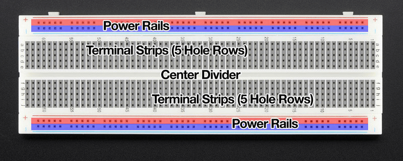
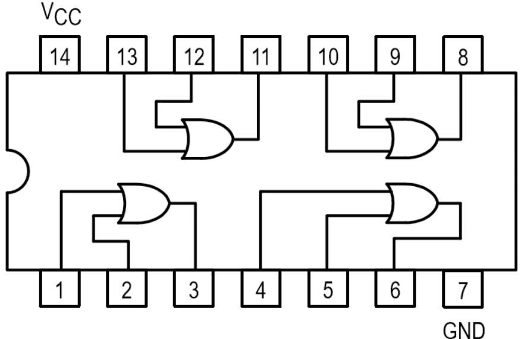

DLD - Lab Basics¶
Breadboard
🌱 Part-1: Breadboard কী?¶
Breadboard হলো একটা plastic board যেটার মধ্যে অনেকগুলো ছোট ছোট hole (গর্ত) থাকে।
এই hole-গুলোর ভিতরে metal clips/strips লুকানো থাকে → এগুলোই নির্দিষ্টভাবে একে অপরের সাথে connected।
👉 আপনি একটা তার (wire) যদি একটা hole-এ ঢুকাও আর একই row-এর অন্য hole-এ ঢোকাও, সেটা একই বৈদ্যুতিক লাইন (electrical connection) হবে।
Analogy
Breadboard = স্কুলের বেঞ্চ
- বেঞ্চে পাঁচজন বাচ্চা পাশাপাশি বসলে তারা সবাই এক বেঞ্চে (connected)।
- কিন্তু পাশের বেঞ্চে বসা বাচ্চাদের সাথে তাদের direct connection নেই ❌।
🧩 Part-2: ভিতরের Connection Secret¶
⚡ Breadboard আসলে ভিতরে কীভাবে connected?¶

Breadboard এর holes গুলো সব আলাদা না। ভেতরে hidden metal strips আছে।
-
মাঝখানে:
-
এক row-এর A–E একসাথে connected ✅
- একই row-এর F–J একসাথে connected ✅
- কিন্তু A–E আর F–J একে অপরের সাথে connected না ❌
-
মাঝখানের gap টা আসলে IC বসানোর জায়গা।
-
পাশে: লম্বা দুইটা line থাকে (Power rail)
-
লাল ( + ) → Vcc (+5V)
- নীল/কালো ( – ) → GND (0V)
📊 Quick Table (Who connects to whom?)¶
| Section | Connection Rule |
|---|---|
| A–E row | একে অপরের সাথে shorted (internal metal strip) ✅ |
| F–J row | একে অপরের সাথে shorted ✅ |
| Gap | Left vs Right side NOT connected ❌ |
| Power Rail + | সব লাল hole সাধারণত connected (কখনো মাঝখানে break ⚠️) |
| Power Rail – | সব নীল hole সাধারণত connected |
Part-4: Breadboard এর Evolution / Timeline¶
- 1940s: Wooden breadboard-এ actual nails দিয়ে circuit বানানো হতো।
- 1970s: Plastic solderless breadboard উদ্ভাবিত হয়।
- Now: আধুনিক breadboard comes in বিভিন্ন size (170 tie-points mini, 400, 830 standard, বড় size)।
বিভিন্ন ধরনের IC
ssss
will be added soon.
🧠 IC (Integrated Circuit) — Beginner theke Advanced (DLD Lab)¶
👀 Overview: IC আসলে কী, কেন দরকার, কোথায় লাগে¶
IC মানে Integrated Circuit—একটা ছোট কালো chip, ভেতরে অনেক transistor, resistor, capacitor একসাথে কাজ করে।
কেন দরকার: একই কাজের discrete parts আলাদা আলাদা জোড়া লাগানোর ঝামেলা কমে, size ছোট হয়, speed বড়ে, reliability বাড়ে।
কোথায় লাগে: Digital Logic Lab (74xx gates), calculator, remote, toys, smartphone—প্রায় সর্বত্র।
Analogy
IC = ছোট একটা শহর 🏙️
ভিতরে road, building, মানুষ—সব আছে; বাইরে আপনি শুধু boundary (package) আর gate (pins) দেখো।
আপনি pins দিয়ে শহরের ভেতরের অংশে message পাঠাও/নাও—এটাই input/output।
🔤 Key Terms & Symbols¶
- Package: IC-এর বাহিরের কভার (যেমন DIP, SOIC, QFP, BGA)
- Pin / Lead: বাহিরের ধাতব পা, যেগুলো দিয়ে connect করা হয়
- Dot/Notch: Package-এ ছোট দাগ/খাঁজ → Pin‑1 চেনার চিহ্ন
- Vcc/Vdd: Positive supply (DLD TTL-এ সাধারণত +5V)
- GND/Vss: Ground/0V
- TTL Family (74xx): সাধারণত +5V-এ চলে
- CMOS Family (40xx / 74HCxx): সাধারণত 3–15V compatible (model অনুযায়ী)
🧩 Default / Initial Values (Lab Context)¶
Given/Assume (DLD lab-e prochur ব্যবহৃত):
- Supply (TTL 74LS/74HC): +5 V
- Logic thresholds (TTL rough guide): LOW ≤ 0.8 V, HIGH ≥ 2.0 V
- Decoupling capacitor: প্রতিটা IC-এর supply pins-এর কাছে 0.1 µF (noise কমাতে)
- Input bias: floating input নিষেধ ❌ → pull-up/pull-down লাগবে (≈ 10 kΩ সাধারণ রুল)
ছোট numeric উদাহরণ (decoupling কেন)
Supply line এ ছোটখাটো voltage dip/spike হলে IC glitch করতে পারে।
0.1 µF cap মিনিটখানেকের জন্য না, কিন্তু microsecond-level spike smooth করে।
বাস্তবে: Vcc–GND across 0.1 µF দিলে random reset/garbage কমে ✅
🧱 Package & Pin Numbering (DIP উদাহরণ)¶

- Notch/dot ওপরে ধরলে বাম দিকের উপরের পা = Pin‑1
- Anti‑clockwise ঘুরে নম্বর বাড়ে; 14‑pin-এ সাধারণত Pin‑14 = Vcc, Pin‑7 = GND
Orientation ভুল হলে?
IC উল্টো করলে Vcc/GND পাল্টে গিয়ে chip damage হতে পারে ❌
Power দেবার আগে পিন‑১ চিহ্ন ডাবল‑চেক করো।
⚡ Logic Family Quick Summary (TTL vs CMOS)¶
| Family | Typical Vcc | Pros | Caution |
|---|---|---|---|
| 74LS/74HC | 5 V | Lab‑friendly, easy availability | Floating input এ ভুল আচরণ ⚠️ |
| 4000‑series | 3–15 V | Wide voltage, low power | ধীর হতে পারে, model‑wise vary |
Beginners’ Rule
DLD‑এ 74xx (5 V) ধরেই শুরু করো। পরে datasheet দেখে exceptions শিখবে।
🧪 Inside the IC¶
ভিতরে অনেক transistor gate বানায়; gates মিলে functions (adder, counter) বানায়; সব এক চিপে packed = integration।
VLSI হলে millions/billions transistor—যেমন smartphone SoC।
🗺️ Tiny Timeline (Scale evolution)¶
- SSI (1960s): কয়েকটা gate
- MSI (1970s): adder/counter‑type blocks
- LSI (1980s): memory/controller
- VLSI (1990s→): microprocessor/SoC (today’s billions)
Pin-1 সনাক্তকরণ
- IC-তে সবসময় ছোট খাঁজ (notch) বা ডট থাকে Pin-1 বোঝার জন্য।
- খাঁজ/ডট উপরে রাখলে, বাম দিকের প্রথম পিনই Pin-1 ✅
- পিন গোনা হয় counter-clockwise দিকে।
- ভুলভাবে ধরলে VCC/GND উল্টে গিয়ে IC নষ্ট হতে পারে ⚠️
🔄 Flowchart: “নতুন IC হাতে পেলে কীভাবে শুরু করবো?”¶
flowchart TD
A["নতুন IC"] --> B["Pin-1 খুঁজুন (ডট/নচ)"]
B --> C["প্যাকেজ/পিন সংখ্যা যাচাই করুন"]
C --> D["ডাটাশিটে VCC রেঞ্জ যাচাই করুন"]
D --> E["পাওয়ার পিনগুলো চিহ্নিত করুন (VCC/GND)"]
E --> F["0.1 uF ডিকাপলিং বসান"]
F --> G["I/O টাইপ নির্ধারণ করুন (TTL/CMOS)"]
G --> H{"কোনো ইনপুট ফ্লোটিং আছে?"}
H -- হ্যাঁ --> H1["~10k পুল রেজিস্টর যোগ করুন"]
H -- না --> I["অগ্রসর হোন"]
H1 --> I
🧾 Quick Summary Table¶
| Topic | Quick Note |
|---|---|
| Pin‑1 mark | Dot/Notch |
| Counting direction | Anti‑clockwise (top view) |
| Common power pins (DIP14) | Pin‑14=Vcc, Pin‑7=GND |
| Floating inputs | Avoid; use ~10 kΩ pull |
| Decoupling | 0.1 µF across Vcc–GND |
| Family default | 74xx → 5 V (lab) |
⚠️ Common Mistakes & Quick Fix¶
- ❌ Pin‑1 ভুল ধরা → ✅ Notch/dot confirm করো
- ❌ Vcc/GND মিস‑ওয়্যার → ✅ Power map লিখে নাও, তারপর connect
- ❌ Floating input → ✅ Pull‑up/pull‑down (~10 kΩ)
- ❌ Decoupling না দেয়া → ✅ 0.1 µF দিয়েই শুরু করো
- ❌ Mixed voltage family → ✅ এক voltage family maintain করো/level shift ব্যবহার করো
🔁 Recap¶
IC = ছোট বক্স, ভেতরে বিশাল সার্কিট। শুরুতে যা মনে রাখবে: Pin‑1, Vcc/GND, family voltage, inputs fixed, decoupling—এইগুলো ঠিক থাকলে ৯০% ঝামেলা বন্ধ ✅
🧩 Practice (ছোট প্রশ্ন, ঝটপট উত্তর)¶
1) Pin‑1 চেনার সহজ উপায় কী?
→ Dot/Notch দেখো।
2) 14‑pin 74xx‑এ Vcc/GND কোথায় থাকে?
→ Pin‑14 = Vcc, Pin‑7 = GND.
3) Floating input কেন খারাপ?
→ Random noise তুলে unpredictable আচরণ করে।
4) Decoupling capacitor-এর common value কত রাখবে?
→ 0.1 µF (প্রতি IC‑এর supply pinsের কাছে)।
5) TTL vs CMOS—শুরুতে কোনটা সহজ?
→ Lab‑এ 74xx (TTL/HC) 5 V দিয়ে শুরু করা সহজ।
🧠 IC (Integrated Circuit) — DLD Lab Notes¶
Overview¶
An Integrated Circuit is a compact chip containing many transistors/resistors/capacitors forming complete functions.
Why: smaller, faster, more reliable than discrete builds.
Where: 74xx logic labs, calculators, toys, phones, etc.
Key Terms¶
- Package: external form (DIP, SOIC, QFP, BGA)
- Pin/Lead: metal terminals to connect I/O and power
- Dot/Notch: marks Pin‑1
- Vcc/Vdd: positive supply (TTL lab: +5 V)
- GND/Vss: ground/0 V
- TTL (74xx): typically 5 V; CMOS (40xx/74HCxx): ~3–15 V (model‑dependent)
Defaults (Lab)¶
- Supply: +5 V (74LS/74HC)
- Logic thresholds (TTL guide): LOW ≤ 0.8 V, HIGH ≥ 2.0 V
- Decoupling: 0.1 µF across Vcc–GND near each IC
- Avoid floating inputs; use ~10 kΩ pull‑ups/downs
Package & Pin Numbering (DIP)¶
- With dot/notch on top: top‑left = Pin‑1; count anti‑clockwise
- 14‑pin common map: Pin‑14 = Vcc, Pin‑7 = GND
Family Snapshot¶
| Family | Vcc | Pros | Caution |
|---|---|---|---|
| 74LS/74HC | 5 V | Lab‑friendly | Define inputs; no float |
| 4000 series | 3–15 V | Wide range, low power | Slower; model dependent |
Inside the IC (Idea)¶
Gates built from transistors; gates form functions; VLSI packs millions/billions (modern SoCs).
Timeline¶
SSI → MSI → LSI → VLSI (1960s → now).
Flowchart: First‑time IC Setup¶
flowchart TD
A["New IC"] --> B["Find Pin-1 (dot/notch)"]
B --> C["Check package/pin count"]
C --> D["Verify VCC range in datasheet"]
D --> E["Identify power pins (VCC/GND)"]
E --> F["Place 0.1 uF decoupling"]
F --> G["Classify I/O type (TTL/CMOS)"]
G --> H{Any floating inputs?}
H -- Yes --> H1["Add ~10k pull resistors"]
H -- No --> I["Proceed"]
H1 --> IQuick Summary¶
| Topic | Note |
|---|---|
| Pin‑1 marker | Dot/Notch |
| Count direction | Anti‑clockwise (top) |
| DIP‑14 power pins | 14=Vcc, 7=GND |
| Floating inputs | Avoid; add ~10 kΩ pull |
| Decoupling | 0.1 µF near supply |
| Beginner family | 74xx at 5 V |
Common Mistakes¶
Wrong orientation, miswired Vcc/GND, floating inputs, no decoupling, mixing families without level matching.
Recap¶
Learn the essentials first: Pin‑1, power pins, family voltage, stable inputs, decoupling. These remove most lab issues.
Practice (Short Answers)¶
1) How to find Pin‑1? Dot/Notch.
2) DIP‑14 power pins? 14=Vcc, 7=GND.
3) Why avoid floating inputs? Unpredictable behavior.
4) Typical decoupling value? 0.1 µF.
5) Beginner‑friendly family? 74xx at 5 V.